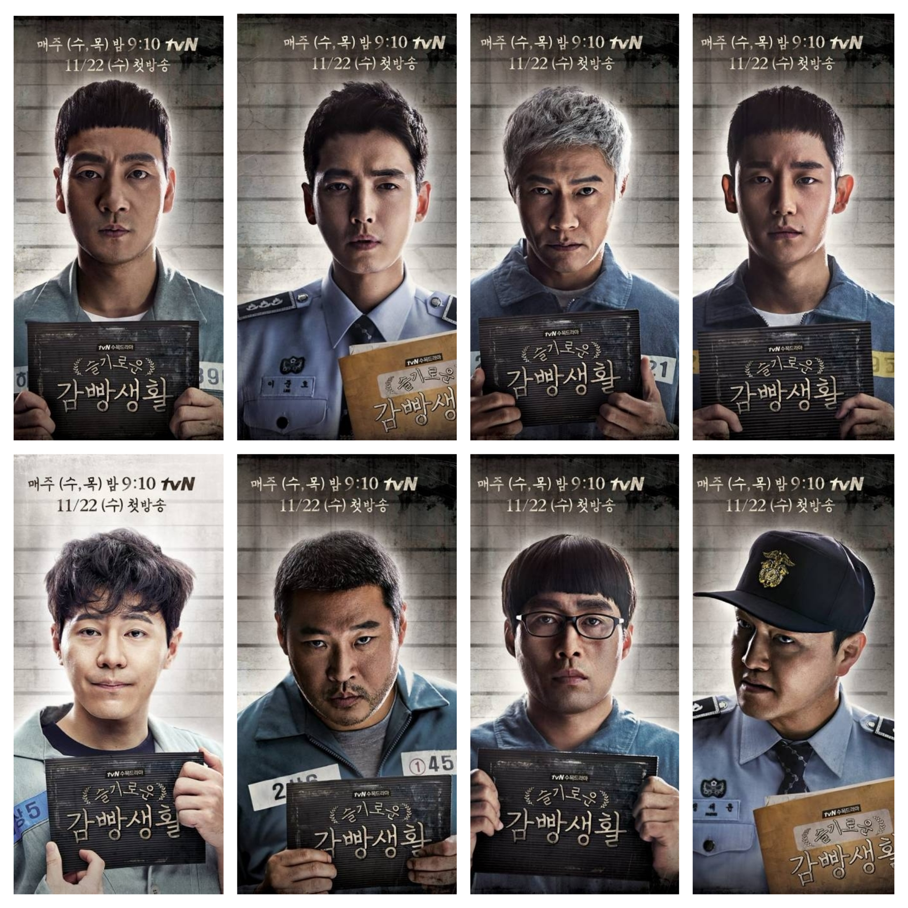
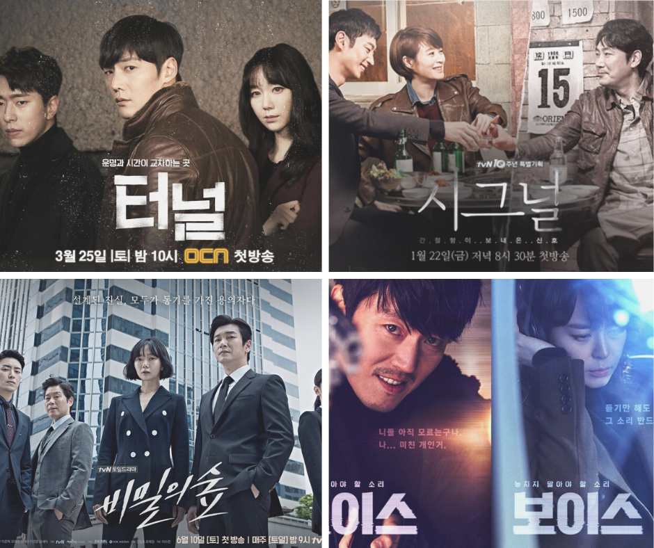

【劇情】機智的牢房生活 | 슬기로운 감빵생활
2020.05.12
韓國難得有以監獄為背景發生的故事，表面上看起來像負面的題材，內容卻非常勵志、振奮人心，而且深入人性，雖然每件發生的事都圍繞著這群監獄裡的「壞人」，卻能在過程中看見本性的善良，然而編劇最厲害的是運用觀眾喜歡美化角色的心理，會突如其來顯現一些「事實」提醒觀眾，看起來是好人的人也不見的能相信、平凡的樣貌下也可能藏著意想不到的企圖，讓人看到一半忍不住瞠目結舌。
這部劇每個人身上都帶著故事進到監獄，有人是課長、有人是富二代，也有人是真的幫派嘍囉，不是每個進監獄的都是壞人，而你認為的好人也不見得不會做壞事，這部劇透過不同的人物故事持續給予觀眾震撼與反思，一個平凡的老伯可能是殺人犯、擁有高學歷的富二代變成吸毒犯、長相兇惡的幫派份子居然是監獄裡的模範生…各種衝突與細節都描摹出人性、現實的寫照，編劇勇敢地玩弄觀眾的心理，牽動著每個人的期待和認知，造就了一部史無前例的精彩傑作。
閱讀更多

【收藏】一起來破案吧！這些熱血沸騰的懸疑警匪劇一次推給你！
2020.05.10
燒腦又過癮的懸疑好劇在這裡！最近幾年韓國電視台推出的許多懸疑劇都參考了韓國過往的真實案件，加上主演們的精湛演技，略帶真實性讓人看了不自覺投入其中，尤其是兇手快現身時，更是腎上腺素飆升、不敢掉以輕心，想要尋求刺激的你，快來收藏這幾部！
1.隧道
2.信號
3.voice
4.秘密森林
❤ 收藏
【投票】(60日)指定倖存者：美版 vs 韓版你選哪一個？
2020.05.09
原本只是在學校教書的老師，被任命為局處部長踏入政界，沒想到在一場國會議事堂爆炸事件後，總統與諸多內閣閣員喪命，唯一倖存的低階官員立即代理總統職權，他將面對的不只是各方質疑，還有深不可測的政治風暴與國安危機。
美版著重在國家安全的事件、社會與政策議題探討，韓版則是圍繞著總統個人的身分危機、政治結構與制度挑戰，當然這也和美韓兩國國情不同有關，而兩版皆有特務秘密搜查、揭開恐怖攻擊背後陰謀的精采情節。
你比較喜歡哪一種風格的指定倖存者呢？
□ 美版
□ 韓版